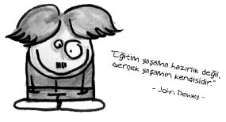

John Dewey (1859-1952)
Amerikalı. “Aletçilik” olarak bilinen felsefe akımının babası sayılıyor. İşlevsel psikolojinin öncülerinden kabul ediliyor. Yapılandırıcı ve analitik eğitim-öğretim sistemini o kurdu. Ünlü “Laboratuar Okulu” ile eğitim sisteminde çığır açmıştır.
Pragmatizmin yani “Bir şey faydalıysa doğrudur, ben doğruya doğru demem eğer faydalı değilse.” diyen akımın en önemli temsilcilerindendir. Öğrenci odaklı eğitim sisteminin temellerini atmıştır.

Atatürk’ün davetiyle 1924 yılında Türkiye’ye gelerek konferanslar vermiş, Atatürk’le Türkiye’de eğitimin nasıl olması gerektiği konusundaki düşüncelerini paylaşmıştır. Köy enstitüleri fikri konusunda da Dewey’in esin verici olduğu ifade edilmektedir.
Ne demiş Dewey…
• Uygarlığımızın geleceği, bilimsel düşünme alışkanlığımızın gitgide yayılmasına ve derinleşmesine bağlıdır.
• Başarısızlık yol göstericidir. İyi düşünen bir insan başarısızlıklarından çok fazla şey öğrenebilir.
• Eğitim bir vazoyu suyla doldurmak değil, bir çiçeğe kendi tarzında büyüyebilmesi için yardımcı olmaktır.
• Siyaset, büyük şirketlerin toplum üzerindeki bir gölgesidir.